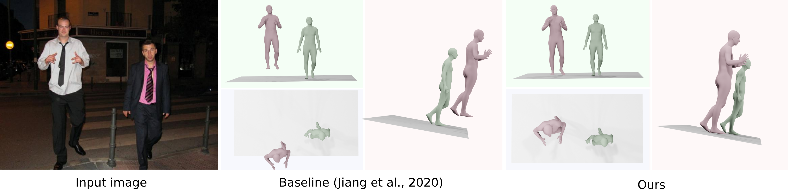
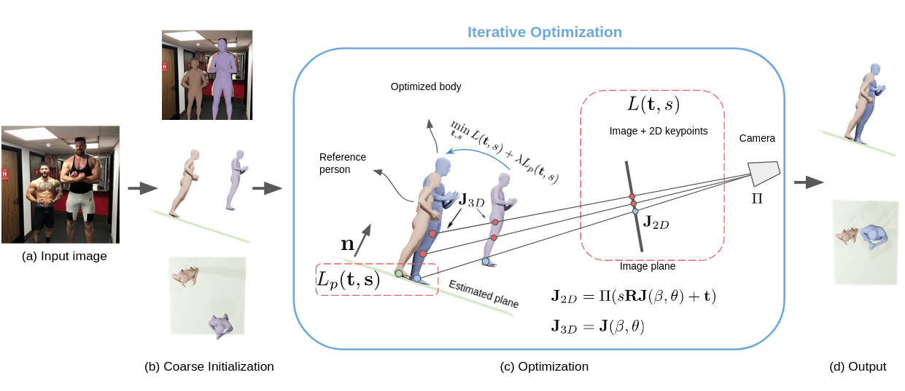
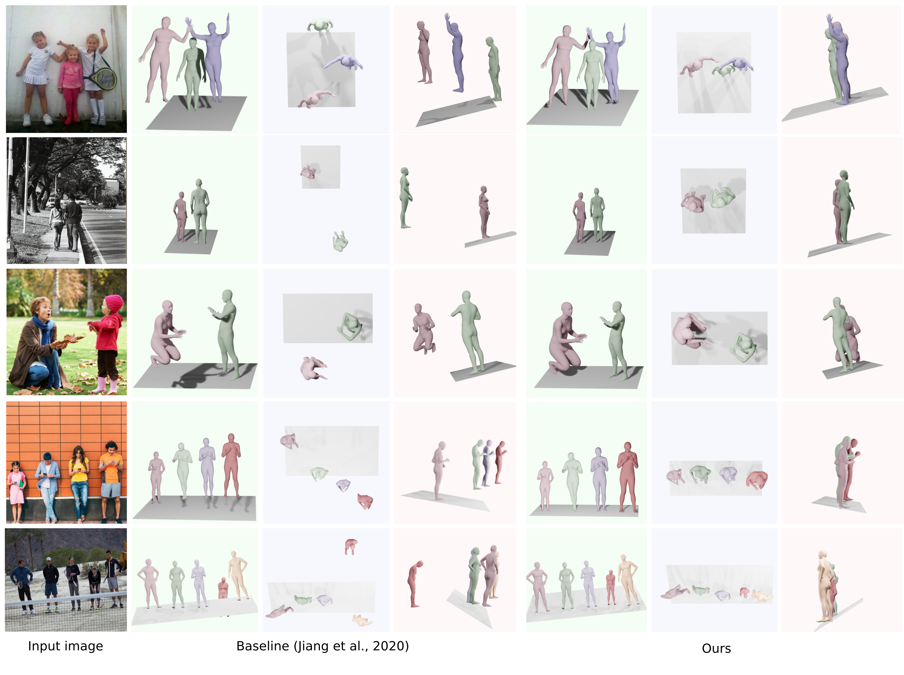
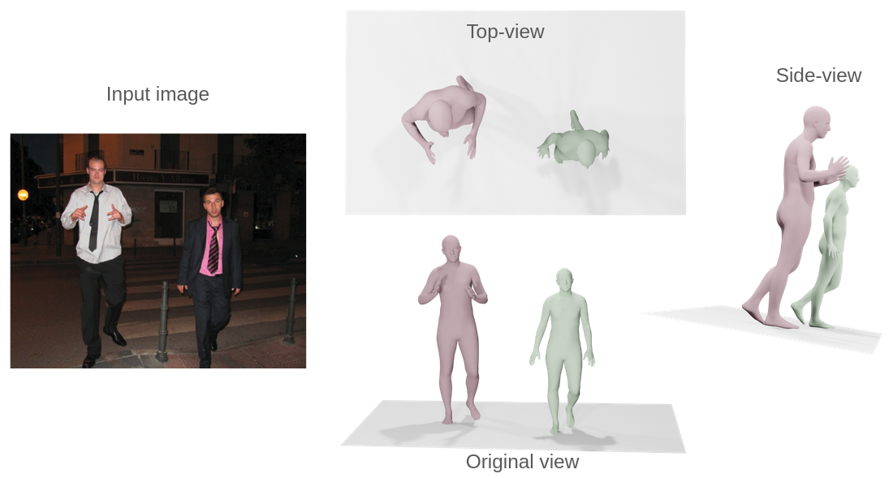

Nicolas Ugrinovic, Adria Ruiz, Antonio Agudo, Alberto Sanfeliu, Francesc Moreno-Noguer

We address the problem of multi-person 3D body pose and shape estimation from a single image. While this problem can be addressed by applying single-person approaches multiple times for the same scene, recent works have shown the advantages of building upon deep architectures that simultaneously reason about all people in the scene in a holistic manner by enforcing, e.g., depth order constraints or minimizing interpenetration among reconstructed bodies. However, existing approaches are still unable to capture the size variability of people caused by the inherent body scale and depth ambiguity. In this work, we tackle this challenge by devising a novel optimization scheme that learns the appropriate body scale and relative camera pose, by enforcing the feet of all people to remain on the ground floor.
A thorough evaluation on MuPoTS-3D and 3DPW datasets demonstrates that our approach is able to robustly estimate the body translation and shape of multiple people while retrieving their spatial arrangement, consistently improving current state-of-the-art, especially in scenes with people of very different heights. Code can be found at: https://github.com/nicolasugrinovic/size_depth_disambiguation.
We consider a novel constraint that estimates body scale and relative camera-body translation while enforcing the feet of all people to remain on the ground. We propose a simple but effective coarse-to-fine strategy where we first use any existing method to extract an initial estimation of the shape and pose of all people in the image. This estimate may contain gross errors. We then extract the ground plane from the image using an off-the-shelf depth and semantic segmentation estimation network and compute the 3D normal direction of that plane. Finally, we devise a learning scheme, in which translation and scale parameters per person are optimized so as to minimize the feet-to-plane 3D distance and the 2D reprojection error.

We are able to successfully address the depth/size ambiguity intrinsic to all 3D reconstruction problems for the specific case of pose and shape estimation. Our method produces results with more realistic spatial arrangement than previous ones while capturing the diversity of body sizes. This yields improved depth ordering and better proportional distances among people in the scene when compared to other methods.


@article{ugrinovic2021depthsize,
Author = {Ugrinovic, Nicolas and Ruiz, Adria and Agudo, Antonio and Sanfeliu, Alberto and Moreno-Noguer, Francesc},
Title = {Body Size and Depth Disambiguation in Multi-Person Reconstruction from Single Images},
Year = {2021},
booktitle = {3DV},
}